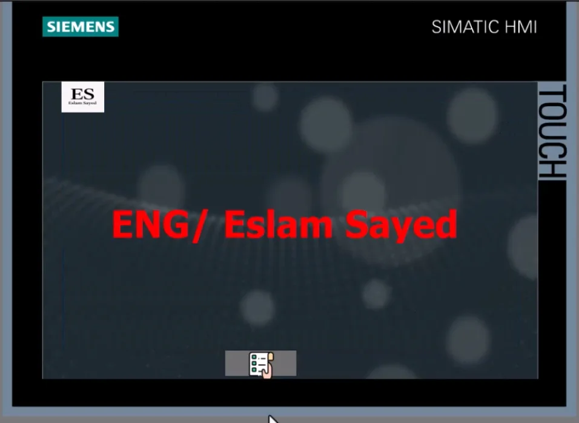
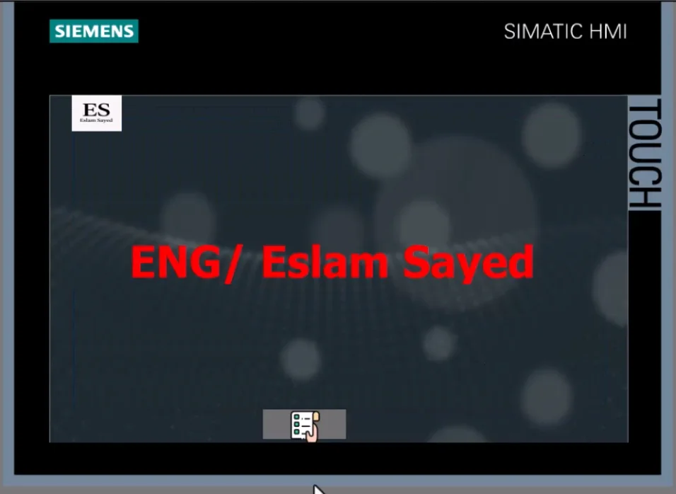

Alternating Submersible Pumps

üí° Project Overview
This project presents an automated system for alternating operation of two submersible pumps using four float switches (low, mid, high, and overflow levels). The system is designed to maintain water levels within a specific range and to manage pump operation based on tank status, while also triggering an alarm in case of overflow.
The project is implemented using Siemens PLC and HMI, and is designed to operate in two modes: manual and automatic. In manual mode, the operator can directly control each pump via HMI buttons, while in automatic mode, the system handles pump operation based on float switch feedback.
⚙️ System Description
The float switches are arranged vertically inside the tank as follows:
- Float 1 (Lowest): Prevents pump operation when water level is too low.
- Float 2 (Middle): Starts the first pump when water reaches this level.
- Float 3 (High): Starts the second pump alternately with the first, each cycle.
- Float 4 (Overflow): Triggers a high-level alarm and prevents further pump operation until acknowledged.
Automatic Mode Logic:
- Pumps alternate with each cycle upon reaching Float 3 (High Level).
- If the water level drops below Float 2, only one pump remains active.
- If the water reaches Float 4, an alarm is triggered and both pumps are stopped for safety.
- The alarm must be acknowledged manually before resuming automatic operation.
Manual Mode Logic:
- Operator can start/stop any pump manually from the HMI.
- Float 1 must be active (not dry) to allow any pump operation.
- Alternation logic is disabled in manual mode; each pump acts independently.
üîí Safety & Protection
- Each pump is equipped with an overload protection relay.
- An audible buzzer is activated when the overflow float switch is triggered.
- System failsafe ensures that pumps are not allowed to operate under dry conditions.
üì∑ Image Gallery
 
